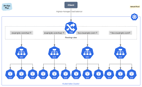

1. Introducción a Kubernetes
El Problema: ¿Por qué necesitamos esto?
Con Docker sabéis empaquetar apps. Con Swarm aprendisteis a distribuirlas. Pero en producción real aparecen problemas que Swarm resuelve "a medias":
- 🔥 Un nodo se cae → ¿quién redistribuye la carga rápido?
- 📈 Black Friday → ¿quién escala de 3 a 30 réplicas automáticamente?
- 🔄 Deploy de nueva versión → ¿cómo hacerlo con cero downtime?
- 🔒 Microservicio A no debería hablar con C → ¿quién controla eso?
- 💾 La base de datos necesita disco que sobreviva al contenedor → ¿cómo?
Kubernetes resuelve todos estos problemas. Y lo hace de forma declarativa: tú describes el estado deseado, K8s se encarga de mantenerlo.
Origen: De Google al Mundo
| Año | Evento |
|---|---|
| 2003-2013 | Google ejecuta billones de contenedores/semana con sistemas internos: Borg y Omega |
| 2014 | Google libera Kubernetes como open-source (no es Borg, pero hereda sus ideas) |
| Jul 2015 | Kubernetes v1.0 — donado a la CNCF (Cloud Native Computing Foundation) |
| 2017-2018 | AWS, Azure y GCP ofrecen K8s gestionado. Docker Inc. añade soporte nativo |
| 2020 | Docker Swarm pierde relevancia. K8s es el estándar de facto |
| Hoy | 96% de organizaciones usan o evalúan K8s (CNCF Survey 2023) |
¿Qué es Kubernetes en una frase?
- 📦 Orientada a contenedores — todo es un contenedor
- 🟩 Microservicios — diseñada para apps distribuidas
- ⛅ Híbrida / Multi-cloud — funciona igual en cualquier sitio
- 🔧 Escrito en Go — rápido, compilado, concurrente
- 🌍 Comunidad masiva — +3.500 contributors, mayor proyecto en GitHub después de Linux
El nombre
K8s = K + 8 letras + s (abreviatura de la comunidad).

3. Arquitectura del Clúster

Control Plane (Master Node)
Equivalente al Swarm Manager, pero con componentes especializados:
| Componente | Función | Equivalente Swarm |
|---|---|---|
| kube-apiserver | API REST, punto de entrada | Manager API |
| etcd | Almacén KV distribuido (estado del clúster) | Raft store interno |
| kube-scheduler | Decide dónde ejecutar pods | Scheduler integrado |
| kube-controller-manager | Mantiene el estado deseado | Reconciliation loop |
| cloud-controller-manager | Integración con proveedores cloud | N/A |

Worker Nodes
| Componente | Función | Equivalente Swarm |
|---|---|---|
| kubelet | Agente que ejecuta pods | Docker daemon + agent |
| kube-proxy | Reglas de red (iptables/IPVS) | Routing mesh |
| Container Runtime | docker, containerd, cri-o | Docker engine |
4. Objetos Principales

| Objeto | Descripción | Equivalente Swarm |
|---|---|---|
| Pod | 1+ contenedores, unidad mínima | Task (un contenedor) |
| Deployment | Gestiona réplicas, rolling updates | Service |
| Service | IP estable + DNS + load balancing | Service VIP |
| Namespace | Aislamiento lógico | N/A (Swarm no tiene) |
| Secret/ConfigMap | Configuración y secretos | Docker secrets/configs |
| Volume | Almacenamiento persistente | Docker volumes |

Pod vs Container
- En Swarm: 1 task = 1 contenedor
- En K8s: 1 pod = 1+ contenedores que comparten red y almacenamiento
- Caso típico: sidecar patterns (proxy, logging, etc.)
Labels
Los labels son pares clave/valor que se adjuntan a cualquier objeto de Kubernetes (pods, nodos, services, deployments…). Son la base del sistema de selección de K8s: los controladores y services usan selectors para encontrar los objetos que les corresponden.
Reglas de nomenclatura
- Formato:
clave: valor— ambos son strings - Clave: opcional prefijo DNS (
app.kubernetes.io/) + nombre ≤ 63 chars alfanumérico con-,_,. - Valor: ≤ 63 chars, puede estar vacío
- Pueden añadirse, modificarse y eliminarse en cualquier momento
Labels recomendados por la comunidad (app.kubernetes.io/*)
| Label | Significado | Ejemplo |
|---|---|---|
app.kubernetes.io/name | Nombre de la aplicación | mysql |
app.kubernetes.io/version | Versión del artefacto | 8.0.35 |
app.kubernetes.io/component | Componente dentro de la app | database |
app.kubernetes.io/part-of | Aplicación de nivel superior | ecommerce |
app.kubernetes.io/managed-by | Herramienta que lo gestiona | helm |
environment | Entorno (convención propia) | production |
Ejemplo: Pod con labels
apiVersion: v1
kind: Pod
metadata:
name: api-users-v2
labels:
app.kubernetes.io/name: api-users
app.kubernetes.io/version: "2.1.0"
app.kubernetes.io/component: backend
app.kubernetes.io/part-of: ecommerce
environment: production
tier: api
spec:
containers:
- name: api
image: myrepo/api-users:2.1.0
Selectors: usando labels para encontrar objetos
Existen dos tipos de selector:
- Equality-based:
=,==,!=— usado por Services y ReplicationControllers - Set-based:
in,notin,exists— usado por Deployments, Jobs, y Node Affinity
# Listar pods con un label concreto
kubectl get pods -l environment=production
# Múltiples condiciones (AND implícito)
kubectl get pods -l "environment=production,tier=api"
# Set-based: pods cuyo tier sea api o frontend
kubectl get pods -l "tier in (api, frontend)"
# Pods que NO tengan el label environment=development
kubectl get pods -l "environment notin (development)"
# Añadir un label a un pod existente
kubectl label pod api-users-v2 release=stable
# Eliminar un label (con guión al final de la clave)
kubectl label pod api-users-v2 release-
Labels en un Service (selector)
apiVersion: v1
kind: Service
metadata:
name: svc-api-users
spec:
selector:
app.kubernetes.io/name: api-users # Solo envía tráfico a pods con este label
environment: production
ports:
- port: 80
targetPort: 8080
Anotaciones (Annotations)
Las anotaciones también son pares clave/valor, pero a diferencia de los labels no se usan para selección. Son metadatos arbitrarios para uso humano o de herramientas externas. No tienen restricciones de tamaño y pueden contener texto largo, JSON, URLs, etc.
| Labels | Annotations |
|---|---|
| Identifican y agrupan objetos | Almacenan metadatos descriptivos |
| Usados por selectores y controladores | Usados por herramientas externas (Helm, Ingress, monitorización…) |
| Valor ≤ 63 chars | Sin límite práctico de tamaño |
| Sintaxis estricta (alfanumérico) | Cualquier string válido |
Casos de uso reales
apiVersion: apps/v1
kind: Deployment
metadata:
name: api-users
annotations:
# Metadatos del equipo
team: "backend-squad"
contact: "backend@miempresa.com"
# Información del repositorio/CI
git-commit: "a3f9c12"
ci-pipeline: "https://jenkins.miempresa.com/job/api-users/42"
# Configuración para herramientas externas
prometheus.io/scrape: "true"
prometheus.io/port: "9090"
prometheus.io/path: "/metrics"
# Configuración de Ingress nginx
nginx.ingress.kubernetes.io/rate-limit: "100"
nginx.ingress.kubernetes.io/ssl-redirect: "true"
# Helm (añadido automáticamente)
meta.helm.sh/release-name: "ecommerce"
meta.helm.sh/release-namespace: "production"
Gestión desde CLI:
# Añadir anotación
kubectl annotate pod api-users-v2 contact="backend@miempresa.com"
# Ver anotaciones de un objeto
kubectl describe pod api-users-v2 | grep -A5 Annotations
# Eliminar anotación
kubectl annotate pod api-users-v2 contact-
Labels en Nodos
Los nodos también tienen labels. Kubernetes añade algunos automáticamente al unirse al clúster, y los administradores pueden añadir los suyos propios para describir características del hardware o la ubicación.
Labels automáticos en nodos
kubernetes.io/hostname: worker-01
kubernetes.io/os: linux
kubernetes.io/arch: amd64
node.kubernetes.io/instance-type: m5.xlarge # en cloud
topology.kubernetes.io/region: eu-west-1
topology.kubernetes.io/zone: eu-west-1a
Añadir labels personalizados a nodos
# Marcar un nodo como nodo con GPU
kubectl label node worker-03 accelerator=nvidia-tesla-v100
# Marcar nodos por entorno
kubectl label node worker-01 environment=production
kubectl label node worker-02 environment=production
kubectl label node worker-04 environment=staging
# Ver labels de todos los nodos
kubectl get nodes --show-labels
# Filtrar nodos por label
kubectl get nodes -l accelerator=nvidia-tesla-v100
Node Selector (asignación básica a nodos)
La forma más simple de controlar en qué nodo se ejecuta un pod es nodeSelector: el scheduler solo colocará el pod en nodos que tengan todos los labels indicados.
apiVersion: v1
kind: Pod
metadata:
name: gpu-job
spec:
nodeSelector:
accelerator: nvidia-tesla-v100 # Solo en nodos con GPU
environment: production
containers:
- name: ml-trainer
image: myrepo/ml-trainer:latest
resources:
limits:
nvidia.com/gpu: 1
Node Affinity (afinidad con nodos)
Node Affinity es la evolución de nodeSelector. Permite expresar reglas más expresivas usando operadores (In, NotIn, Exists, DoesNotExist, Gt, Lt) y tiene dos modos:
| Tipo | Comportamiento |
|---|---|
requiredDuringSchedulingIgnoredDuringExecution | El pod solo se programa si cumple la regla. Si no hay nodo válido, el pod queda pendiente (Pending). |
preferredDuringSchedulingIgnoredDuringExecution | El scheduler intenta cumplir la regla, pero si no hay nodo válido, programa el pod igualmente donde pueda. |
"IgnoredDuringExecution" significa: si un pod ya está corriendo y se cambia el label del nodo, el pod no es expulsado.
Ejemplo: required + preferred
apiVersion: apps/v1
kind: Deployment
metadata:
name: api-users
spec:
replicas: 3
selector:
matchLabels:
app: api-users
template:
metadata:
labels:
app: api-users
spec:
affinity:
nodeAffinity:
# OBLIGATORIO: solo en nodos de producción en Europa
requiredDuringSchedulingIgnoredDuringExecution:
nodeSelectorTerms:
- matchExpressions:
- key: environment
operator: In
values: [production]
- key: topology.kubernetes.io/region
operator: In
values: [eu-west-1, eu-central-1]
# PREFERIDO: intentar ir a nodos de alta memoria
preferredDuringSchedulingIgnoredDuringExecution:
- weight: 80 # mayor peso = mayor preferencia (1-100)
preference:
matchExpressions:
- key: node-type
operator: In
values: [high-memory]
- weight: 20
preference:
matchExpressions:
- key: topology.kubernetes.io/zone
operator: In
values: [eu-west-1a] # preferir zona A (más barata)
containers:
- name: api
image: myrepo/api-users:2.1.0
Taints y Tolerations
Node Affinity atrae pods a nodos. Los Taints hacen lo contrario: repelen pods de un nodo. Un pod solo puede ejecutarse en un nodo con taint si tiene una Toleration correspondiente.
Estructura de un Taint
clave=valor:efecto
# Efectos posibles:
# NoSchedule — no programar nuevos pods sin toleration
# PreferNoSchedule — intentar no programar (soft)
# NoExecute — no programar Y expulsar pods existentes sin toleration
Gestión de Taints en nodos
# Añadir taint: nodo reservado para GPU
kubectl taint node worker-03 dedicated=gpu:NoSchedule
# Añadir taint: nodo en mantenimiento (expulsa pods existentes)
kubectl taint node worker-01 maintenance=true:NoExecute
# Ver taints de un nodo
kubectl describe node worker-03 | grep Taint
# Eliminar taint (guión al final)
kubectl taint node worker-03 dedicated=gpu:NoSchedule-
Tolerations en pods/deployments
apiVersion: apps/v1
kind: Deployment
metadata:
name: gpu-trainer
spec:
replicas: 2
selector:
matchLabels:
app: gpu-trainer
template:
metadata:
labels:
app: gpu-trainer
spec:
tolerations:
# Permite ejecutarse en nodos con taint dedicated=gpu:NoSchedule
- key: dedicated
operator: Equal
value: gpu
effect: NoSchedule
# Tolerar nodos en mantenimiento hasta 30 segundos antes de ser expulsado
- key: maintenance
operator: Exists
effect: NoExecute
tolerationSeconds: 30
# Combinar con nodeAffinity para IR además al nodo GPU
affinity:
nodeAffinity:
requiredDuringSchedulingIgnoredDuringExecution:
nodeSelectorTerms:
- matchExpressions:
- key: accelerator
operator: In
values: [nvidia-tesla-v100]
containers:
- name: trainer
image: myrepo/gpu-trainer:latest
Taints automáticos del sistema
K8s añade taints automáticamente en ciertas situaciones. Es importante conocerlos para entender por qué un pod puede quedar en Pending:
| Taint automático | Cuándo se añade |
|---|---|
node.kubernetes.io/not-ready:NoExecute | Nodo no está Ready |
node.kubernetes.io/unreachable:NoExecute | Nodo no es alcanzable por el Control Plane |
node.kubernetes.io/memory-pressure:NoSchedule | Nodo con poca memoria |
node.kubernetes.io/disk-pressure:NoSchedule | Nodo con poco disco |
node-role.kubernetes.io/control-plane:NoSchedule | Nodos del Control Plane (no ejecutan pods de usuario) |
Resumen: cuándo usar cada mecanismo
| Mecanismo | Dirección | Cuándo usarlo |
|---|---|---|
| nodeSelector | Pod → Nodo (atracción) | Casos simples, una sola condición de igualdad |
| Node Affinity | Pod → Nodo (atracción) | Condiciones complejas, OR, preferencias con pesos |
| Taints | Nodo → Pod (repulsión) | Reservar nodos para usos especiales (GPU, infra, prod) |
| Tolerations | Pod tolera Taint | Permitir que ciertos pods entren en nodos reservados |
Secrets y ConfigMaps (configuración y secretos)
Los ConfigMap almacenan datos no sensibles (pares clave/valor o archivos). Los Secret son para datos sensibles (base64-encoded).
Ejemplo ConfigMap:
apiVersion: v1
kind: ConfigMap
metadata:
name: app-config
data:
APP_ENV: production
LOG_LEVEL: info
Uso como variable de entorno:
env:
- name: APP_ENV
valueFrom:
configMapKeyRef:
name: app-config
key: APP_ENV
Ejemplo Secret (Opaque):
apiVersion: v1
kind: Secret
metadata:
name: db-credentials
type: Opaque
data:
username: YWRtaW4=
password: czNjcjN0
Crear desde CLI:
kubectl create secret generic db-credentials \
--from-literal=username=admin \
--from-literal=password=s3cr3t
Buenas prácticas: no poner secretos en repositorios, habilitar encryption-at-rest, usar SealedSecrets/Vault para producción.
Otros objetos base: ServiceAccount y RBAC
ServiceAccount: identidad para pods. Roles y RoleBindings controlan permisos dentro de un namespace; ClusterRole y ClusterRoleBinding para ámbito cluster.
apiVersion: v1
kind: ServiceAccount
metadata:
name: app-sa
6. Redes en Kubernetes
De monolítico a microservicios


Modelo de Red en K8s

- Flat network — todos los pods se ven entre sí sin NAT
- Cada pod tiene su propia IP
- La red es software (CNI plugins): Calico, Flannel, Cilium, etc.
Servicios y Service Discovery

- Pods son efímeros → no usar IPs directamente
- Services proporcionan IP estable + nombre DNS
- Resolución DNS:
mi-servicio.mi-namespace.svc.cluster.local
Tipos de Service

| Tipo | Acceso | Equivalente Swarm |
|---|---|---|
| ClusterIP | Solo interno al clúster | VIP interna |
| NodePort | Puerto en cada nodo (30000-32767) | Published port |
| LoadBalancer | IP externa (cloud) | N/A |
Service Network

- Los Services no tienen interfaz de red física
- kube-proxy gestiona reglas iptables/IPVS en cada nodo
- El tráfico se rutea al pod correcto
Ingress: Exponiendo servicios al exterior

El problema: NodePort expone un puerto por servicio (limitado a 30000-32767). LoadBalancer crea un balanceador externo por cada servicio (caro en cloud). ¿Y si tengo 20 microservicios que quiero exponer por HTTP/HTTPS con dominios y paths distintos?
La solución: Ingress — un objeto que define reglas de enrutamiento HTTP/HTTPS a nivel de capa 7 (aplicación).
| Concepto | Descripción |
|---|---|
| Ingress | Recurso declarativo que define reglas de enrutamiento (host, path → Service) |
| Ingress Controller | Componente que implementa esas reglas (nginx, HAProxy, Traefik, Envoy…) |
Analogía Swarm: En Swarm usabais Traefik o nginx-proxy como reverse proxy manual. En K8s, Ingress estandariza ese patrón como objeto nativo del API.
¿Cómo funciona?
- Despliegas un Ingress Controller (es un pod que corre un reverse proxy)
- Creas recursos Ingress que declaran las reglas
- El controller lee esas reglas y configura su proxy automáticamente
- El tráfico externo llega al controller → se enruta al Service correcto → llega a los pods
Ejemplo de recurso Ingress
apiVersion: networking.k8s.io/v1
kind: Ingress
metadata:
name: mi-app-ingress
annotations:
nginx.ingress.kubernetes.io/rewrite-target: /
spec:
ingressClassName: nginx
rules:
- host: api.miempresa.com
http:
paths:
- path: /usuarios
pathType: Prefix
backend:
service:
name: svc-usuarios
port:
number: 8080
tls:
- hosts:
- api.miempresa.com
secretName: mi-tls-secretIngress según el entorno
| Entorno | Ingress Controller típico | ¿Cómo llega el tráfico? | Notas |
|---|---|---|---|
| Kind | ingress-nginx (deploy manual) | El controller se expone con hostPort o extraPortMappings | Requiere config especial en manifiesto Kind |
| Vanilla K8s | ingress-nginx, Traefik, HAProxy | DaemonSet con hostNetwork: true o Service NodePort/LoadBalancer (MetalLB) | Sin cloud, necesitas MetalLB o similar |
| OpenShift | Router (HAProxy) — preinstalado | Usa Routes en lugar de Ingress; soporta Ingress también | Routes soportan TLS edge/passthrough/reencrypt |
| Cloud (EKS/GKE/AKS) | AWS ALB Controller, GCE Ingress, Azure AGIC | Se provisiona automáticamente un Load Balancer del cloud provider | Integración nativa con certificados del cloud |
Resumen Ingress
- Sin Ingress: 1 LoadBalancer por servicio → caro y difícil de gestionar
- Con Ingress: 1 punto de entrada → reglas inteligentes L7 → N servicios
- Es el equivalente a un reverse proxy automatizado por Kubernetes
- El Ingress Controller es un componente que hay que instalar (no viene por defecto en vanilla K8s)
7. Almacenamiento

| Concepto | Descripción | Equivalente Swarm |
|---|---|---|
| Volume | Abstracción de almacenamiento | Docker volume |
| PersistentVolume (PV) | Recurso de almacenamiento (disco) | Volume driver |
| PersistentVolumeClaim (PVC) | "Ticket" para solicitar un PV | N/A |